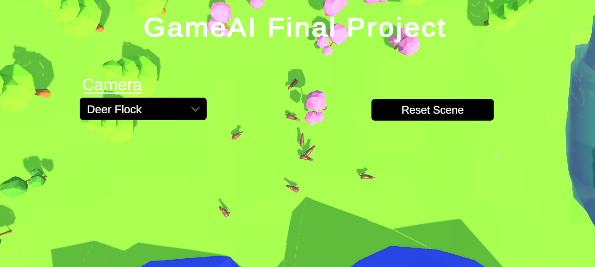
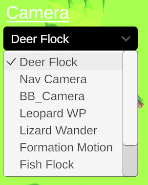
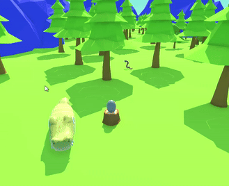
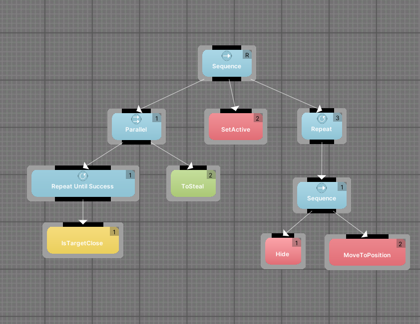
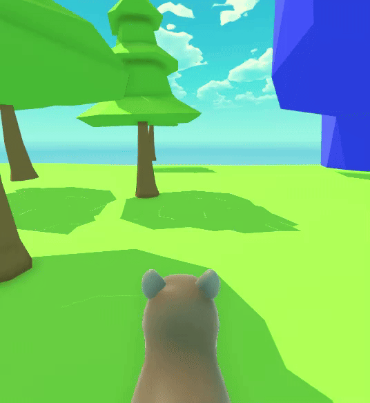
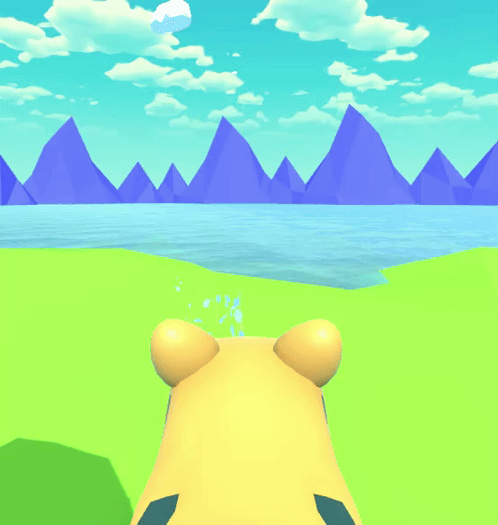
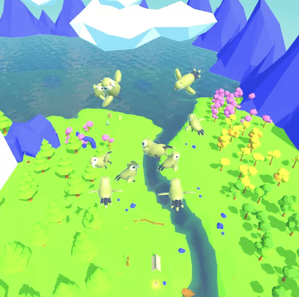
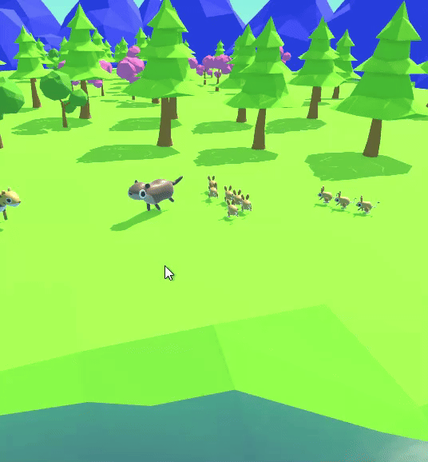
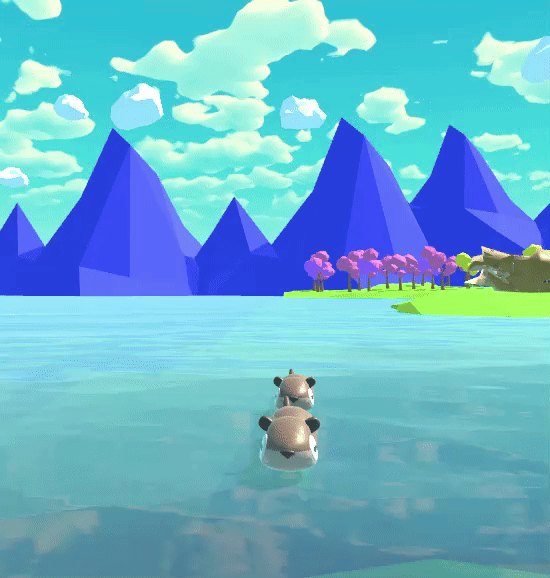
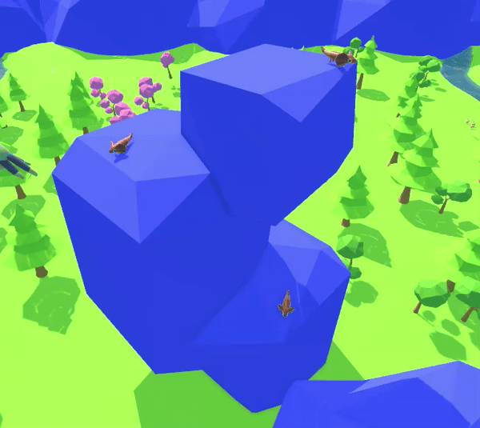

| Menu UI |
Press esc to open the Projects Menu system, which allows the user to navigate to various cameras illustrating AI behavior, and reset the scene. |
 |
No Script. Uses Unity Canvas & UI Flow |
| Camera Selection UI |
Open the Dropdown Menu to toggle between Camera's showing different AI behaviors. |
 |
No Script. Uses Unity Canvas & UI Flow |
| Restart Scene UI |
Push the Restart Scene Button to Reset all Behavior |
|
No Script. Uses Unity Canvas & UI Flow |
| Crocodile & Snake Behavior Behavior Bricks |
The scene featues a Crocodile guarding his egg. The Crocodile can be moved via the user using mouse clicks. However be careful, a Snake is attempting to steal the egg, and if the Crocodile is moved too far the Snake will steal and subsequently hide. |
 |
 |
| Navigation Camera UI |
Navigatable Camera in Scene using user mouse positioning and WASD movement. Press shift or ctrl to rise or descend. |
 |
Camera Script: Nav Camera |
| Deer Behavior Wander AI |
Deers flock within scene. The flock moves location around the entire scene and the deer with it. Flocking is random. Deer Manager has an adjustable amount of deer, and adjustable radius's, speed etc |
 |
Deer Scripts: Deer Controller, Deer Manager |
| Wolf Behavior Camera Detection AI |
Wolves navigate scene randomly. Wolves have camera frustrum detection with adjustable range. If Wolves detect deer within camera they begin global pathing to detected deer location. Once close to deer they begin to pursue |
 |
Wolf Scripts: Wolf Controller, Wolf Manager |
| Leopard Behavior Waypoint AI |
Leopard navigates scene between waypoints. |
 |
Leopard Script: Leopard Controller |
| Bird Flock Behavior Flock AI |
Birds spawn randomly across scene. They then begin moving to global flock position. Upon reaching position, birds begin to flock in a circle. |
 |
Bird Scripts: Bird Controller, Bird Manager |
| Fish Flock Behavior Flock AI |
Fish spawn around the scene. They then begin moving to the sunken treasure deep within the lake. Fish flock around the treasure. |
 |
Fish Scripts: Fish Controller, Fish Manager |
| Formation Movement Formation AI |
An Otter leads Jerboa across the scene. Jerboa stay tight in formation behind the leader. The Otter has its movement controlled via player mouse clicks. Observe how the formation is kept, with spacing, and speed. |
 |
Formation Motion Script: Formation |
| Otter Behavior Waypoint AI |
A group of Otters navigate the scene following the river. |
 |
Otter Script: Otter Controller |
| Lizard Behavior Wander AI |
A group of Lizards navigate the rocks. |
 |
Lizard Wander Script: Lizard Controller |
| Villager Behavior Wander AI |
A group of villagers gather around the campfire. Villagers stay within a flock radius and do not leave the area. |
 |
Villager Wander Script: Nav Camera |